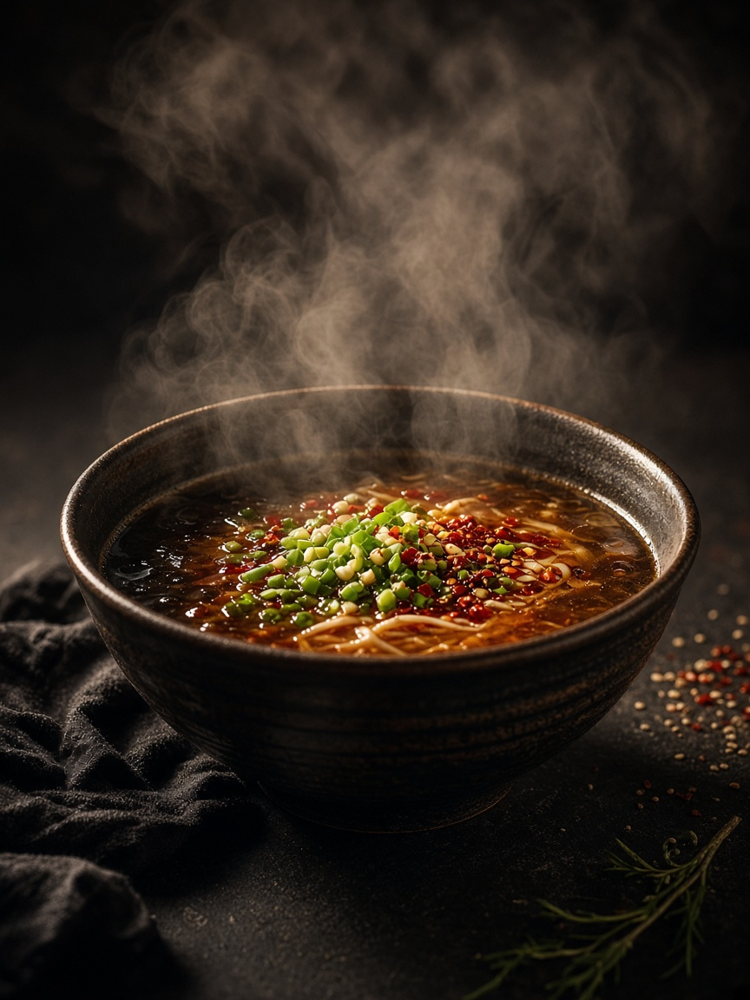
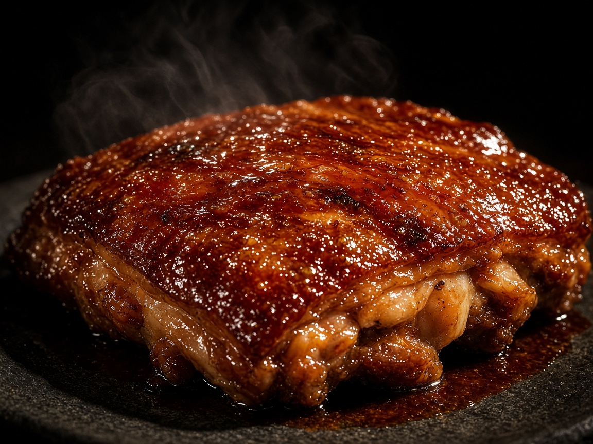
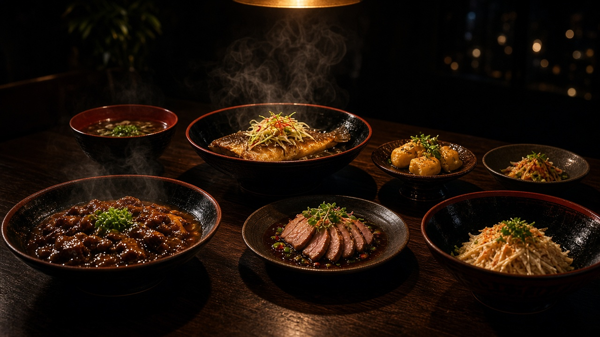

Ember Lacquer
Light held at the edge of a plate.
用镜头讲述 食物的故事
我是沈先生。


Character
光影、食物与影像。
从灯下的一盘，到屏幕上的一度，再到桌上的一餐。

01
On Set
拍摄
先把光找对。
策划、分镜，再到现场的一盏灯。

02
After Hours
影像
剪辑是节奏，调色是呼吸。
在夜色里，把温度留在画面上。

03
The Table
餐桌
食物被端上桌的那一刻。
镜头的尽头，是一张桌子。
Photography
作品


本组为风格参考画面 / 视觉方向，正式作品可替换为实地拍摄的照片与视频。
About
沈现周
成都 · 美食摄影与影像
美食摄影师，编导 / 导演 / 摄影师 / 剪辑师 / 调色师。影像工作约九年。
2021 年 7 月起任职四川荟东方餐饮集团，服务南堂馆等品牌。独立完成宣传片从策划、分镜、拍摄到剪辑调色的全流程；主导拍摄超 200 道菜品主视觉与动态视频；负责抖音、视频号与二十四节气内容，并跟拍新品发布、周年庆与开业现场。
亦承担品牌菜品照片（新店与季节菜品），以及抖音来客套餐、大众点评套餐与门店平板点餐等内容运营。工作中会使用 AI 辅助写脚本、替换菜品照片背景、生成短片。
Sony A7M4 · DaVinci Resolve · Premiere · After Effects · 4K HDR
- 美食摄影
- 编导 / 导演
- 摄影师
- 剪辑师
- 调色师